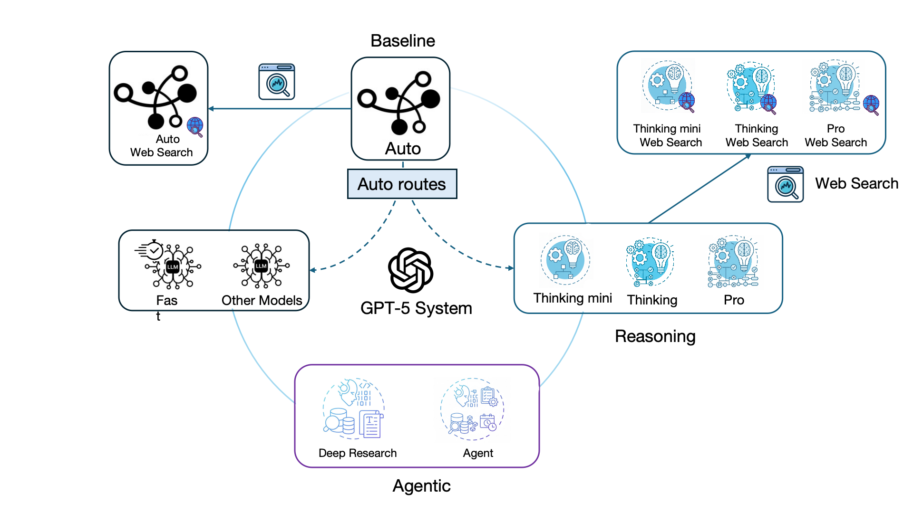
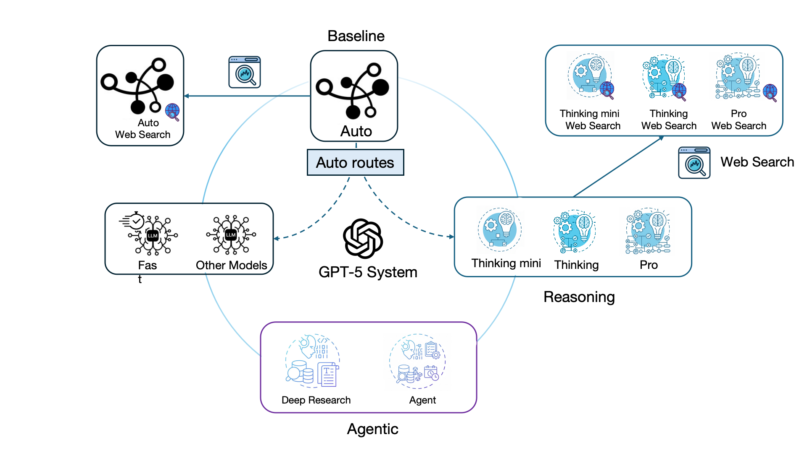

Overview
Overview
 

.png) Introduction
Introduction
Generalist artificial intelligence (AI) agents, built on generative pre-trained transformers (GPTs), are increasingly explored in medical tasks, such as patient-to-trial matching, information retrieval, and answering patient's questions. These applications are largely text based and often involve single-step responses. By contrast, clinical diagnosis requires synthesizing uncertain findings and comparing the cases and external evidence. Existing specialist AI systems are often designed with additional layers of complexity, including enhanced reasoning, incorporation of external knowledge sources, and multi-step, tool-augmented workflows, in order to improve performance. The latest generation AI, exemplified by GPT-5 models, outperforms previous ones by a substantial margin on HealthBench, a realistic open-ended health conversation benchmark. However, in many real-world clinical scenarios, interpreting visual data with the context is central to diagnosis. It remains unclear whether the increased model and agentic complexity in such generalist systems leads to more reliable multimodal diagnosis. Understanding this relationship is important for guiding future deployment and system design for medical AI.
Within ChatGPT ecosystem, GPT-5–based agents offers multiple configurations that differ in model- and system-level complexity. In this case study, we examined ten configurations: (a) a routing baseline (Auto) chooses among backbone models; (b) three "thinking" models (Thinking mini, Thinking, Pro) provide increasing explicit reasoning capacity; (c) each model can be paired with Web Search, yielding retrieval-augmented variants that automatically query external sources during a case; (d) two agentic systems (Agent, Deep Research) orchestrate multi-step plans and tool-augmented workflows. All of these configurations receive the same multimodal clinical inputs but differ in mode, reasoning depth, use of retrieval, and degree of agentic control. This diversity raises a central question for medicine: how do these differences shape diagnostic performance and the reasoning quality of generalist AI agents in multimodal clinical cases?
Existing multimodal benchmarks for medical AI primarily rely on multiple-choice examinations or narrowly scoped image-based questions. Such formats are poorly aligned with the open-ended, dynamic nature of real diagnostic work and offer limited insight into whether models can integrate imaging findings with patient context into a defensible diagnosis. In addition, many recent open-ended evaluations adopted the "model-as-a-judge" strategy, in which one large language model (LLM) scores another AI agents' answers, but empirical studies have shown that it can diverge from human rating and exhibit systematic biases. To bridge these gaps, we curated an open-ended evaluation set of challenging, real-world multimodal diagnostic cases that require correct interpretation of medical images to reach the diagnosis, iteratively refined a clinician-led scoring rubric, evaluated all ten GPT-5 configurations under identical conditions by multiple qualified clinicians, and conducted detailed error analyses of the models' output traces to understand how and why generalist agents fail in multimodal diagnosis.
 Diagnosis Dataset
Diagnosis Dataset
Our dataset is derived from MedXpertQA, a publicly available benchmark for Human Health tasks. Our dataset was curated through physician review and selection, comprising 161 diagnosis cases spanning 5 body systems:
Each case has a unique identifier and an open-ended, reasoning-style diagnostic question paired with medical images spanning CT, MRI, X-ray, PET, pathology images, EEG/ECG recordings, charts, and real-world photographs, together with a clinically validated ground-truth diagnosis.

| Category | Model | Accuracy |
|---|---|---|
| LLM | Auto | 0.3850 |
| Thinking mini | 0.3292 | |
| Thinking | 0.4161 | |
| Pro | 0.4596 | |
| Web-Search | Auto Web Search | 0.2671 |
| Thinking mini Web Search | 0.3478 | |
| Thinking Web Search | 0.4410 | |
| Pro Web Search | 0.4658 | |
| Agent | ChatGPT Agent | 0.3664 |
| Deep Research | 0.2981 |
These results highlight the importance of combining deeper reasoning with disciplined retrieval: the Pro variants maintain the highest accuracy, web search brings only modest gains, and Auto drops by 0.1179 when retrieval is enabled.
 Physician Judge Criteria
Physician Judge Criteria
| Criteria | Matches clinical evidence | Clinical reasoning tolerance | Correct site / polarity | On topic (no hallucination) | Diagnostic granularity tolerance | Minor / format difference | ||||||
|---|---|---|---|---|---|---|---|---|---|---|---|---|
| GT | GPT | GT | GPT | GT | GPT | GT | GPT | GT | GPT | GT | GPT | |
| Both (1 = correct) | ✓ | ✓ | ✓ | ✓ | ✓ | ✓ | ✓ | ✓ | Δ | Δ | Δ | Δ |
| GT (0 = wrong) | ✓ | ✗ | ✓ | ✗ | ✓ | ✗ | ✓ | Δ | Δ | Δ | Δ | Δ |
| GPT (1 = correct) | Δ | ✓ | Δ | ✓ | Δ | ✓ | Δ | ✓ | Δ | Δ | Δ | Δ |
| Other (0 = wrong) | ✗ | ✗ | ✗ | ✗ | ✗ | ✗ | ✗ | ✗ | Δ | Δ | Δ | Δ |
Legend: ✓ = fully meets, Δ = partially meets, ✗ = violates.
 Model Information
Model Information
| LLM Model Versions | |||||
|---|---|---|---|---|---|
| Model Version | Auto (GPT-5) | Thinking mini | Thinking | Pro | Auto Web Search |
| Test Date (mm.dd.2025) | 08.09 | 08.30 | 08.09–08.10 | 08.09 | 08.11 |
| Web Search and Agent Model Versions | |||||
|---|---|---|---|---|---|
| Model Version | Thinking mini Web Search | Thinking Web Search | Pro Web Search | Deep Research | Agent |
| Test Date (mm.dd.2025) | 08.16 | 08.11 | 08.10 | 08.14–08.20 | 08.11–08.13 |
Note: As of August 9, 2025, ChatAuto has been renamed to ChatGPT-5 Auto.
@inproceedings{2025_gpt5_evaluate,
title={The Complexity Paradox of Generalist AI Agents in Medicine: Exploring GPT-5 for Real-World Multimodal Diagnosis },
author={Shaohui Zhang, Jiarong Qian, Kai Zhang, Zhiling Yan, Michael A. Catalano, Kiridly Adam, Omar Toubat, Gregory E. Tasian, Quanzheng Li, Yonghui Wu, Xing Lei, Wei Liu, Hua Xu, Lifang He, Xiang Li, Zhiyong Lu, Lichao Sun, Jing Huang},
booktitle={},
year={2025},
}